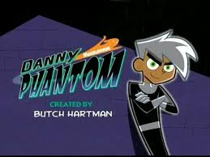

¿Quien soy?
soy un estudiante de desarrollo web apasionado por la tecnología y el diseño. Me encanta aprender nuevas habilidades y enfrentar desafíos en el mundo digital.
Leer más
"Soy un apasionado del desarrollo web, siempre buscando aprender y crear experiencias digitales impactantes. Mi objetivo es combinar creatividad y tecnología para construir soluciones innovadoras que mejoren la vida de las personas tambien quiero seguir adelante y aprender siempre."
- Nicolas Galvis
Mis proyectos

Hoja De Vida
Proyecto donde diseñamos nuestra hoja de vida usando conceptos basicos con HTML y CSS, colocando a prueba nuestros conomientos hasta el momento añidendo nuestra hoja de vida.
Ver proyecto
Tarjeta De Presentacion
Proyecto para aprender a usar diferentes colores y tonalidades en CSS sacando nuestra capacidad artistica con esta herramienta,creando marcadores de colores y utilizando herramientas.
Ver proyecto
Quien Soy
Proyecto donde se construye una pagina imitando el diseño de otra como ejemplo y hacerla lo mas funcional posible con caracteristicas nuestras de quienes creemos ser esta pagina es en la que estamos.
Ver proyectoPortafolio
Proyecto donde crearemos una pagina para ser usada como nuestro portafolio y poder llevar las evidencias de todos los demas proyectos que hemos y sigamos haciendo mas adelante.
Ver proyecto